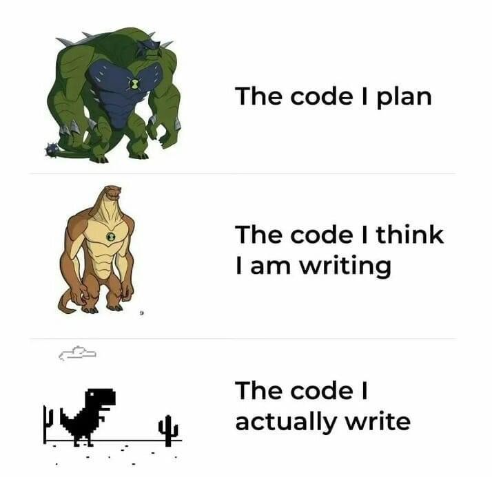

Code
fahr_to_kelvin <- function(temp) {
if (!is.numeric(temp)) {
stop("temp must be a numeric vector.") # condiciones
}
kelvin <- ((temp - 32) * (5 / 9)) + 273.15
return(kelvin)
}Es importante garantizar que las funciones se utilicen solo para los propósitos previstos. Este concepto se llama programación defensiva, y consiste en verificar que se cumplan las condiciones necesarias para que la función funcione correctamente. Si alguna condición falla, se debe generar un error para prevenir comportamientos inesperados.
Vamos a usar las funciones stop() y stopifnot() para detener el código cuando hay un error.
Para más información sobre stopifnot() puedes leer su manual.
stop() con if()El argumento temp debe ser un valor numeric. Para crear un error, podemos usar la función stop(). Por ejemplo, dado que el argumento temp debe ser un vector numeric, podríamos probarlo con un condicional if() y devolver un error si la condición no se cumple. Podríamos agregar esto a nuestra función de la siguiente manera:
fahr_to_kelvin <- function(temp) {
if (!is.numeric(temp)) {
stop("temp must be a numeric vector.") # condiciones
}
kelvin <- ((temp - 32) * (5 / 9)) + 273.15
return(kelvin)
}fahr_to_kelvin(temp = 32)[1] 273.15fahr_to_kelvin(temp = "A")
# Error in fahr_to_kelvin(temp = "A") : temp must be a numeric vector.stopifnot()fahr_to_kelvin <- function(temp) {
stopifnot(is.numeric(temp)) # condiciones
kelvin <- ((temp - 32) * (5 / 9)) + 273.15
return(kelvin)
}fahr_to_kelvin(temp = 32)[1] 273.15fahr_to_kelvin(temp = as.factor(32))
# Error in fahr_to_kelvin(temp = as.factor(32)) :
# is.numeric(temp) is not TRUEwarning() y message() con if()squareX <- function(x) {
if (is.character(x)) {
warning("Converting x to numeric")
x <- as.numeric(x)
} else {
# the type checking done here is of course very incomplete
message("x appears to be numeric")
}
x ^ 2
}squareX("4")Warning in squareX("4"): Converting x to numeric[1] 16squareX(4)x appears to be numeric[1] 16assertthatInstalar el paquete:
install.packages("assertthat")El paquete assertthat realiza lo mismo que stopifnot.
Ejemplos:
library(assertthat) ## Mensajes de error
x <- 1:10
stopifnot(is.character(x))
# Error: is.character(x) is not TRUE
assert_that(is.character(x))
# Error: x is not a character vector
assert_that(length(x) == 5)
# Error: length(x) not equal to 5
assert_that(is.numeric(x))
# [1] TRUEPara más información sobre assertthat puedes leer su manual.
foo_message <- function(x) {
assertthat::assert_that(x == 1, msg = "x must always be 1")
"yay"
}
# verficacion
foo_message(1)[1] "yay"Un script es una colección de varias instrucciones de R escritas en un archivo. La extensión de los script en R es .r o .R. En los scripts podemos colocar comentarios, paquetes, instrucciones de tal forma que pueda ser ejecutado sin problemas.
Cargando la función almacenada en un RData
squareX <- function(x) {
if (is.character(x)) {
warning("Converting x to numeric")
x <- as.numeric(x)
} else {
# the type checking done here is of course very incomplete
message("x appears to be numeric")
}
x ^ 2
}
# Guardar
save(squareX, file="./squareX.Rdata")
rm(squareX) # eliminar funcionCargar en el ambiente de RStudio
load("./squareX.Rdata")Si has estado escribiendo estas funciones en un script de R aparte (¡una buena idea!), puedes cargar las funciones en nuestra sesión de R usando la función source(), en caso de no estar el script en nuestro directorio de trabajo debemos fijarlo o poner la ruta completa al script.
source("squareX_function.R")